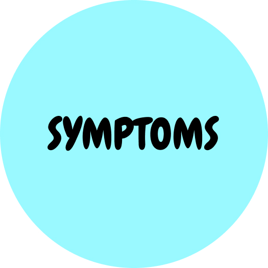
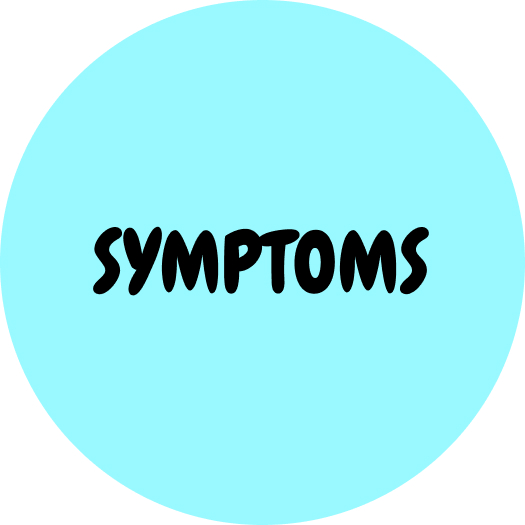

DEPRESSION
SLEEP DISORDER
STRESS DISORDER
EATING DISORDER
ANXIETY DISORDER
FUN TIME
EATING DISORDER
Click on the circles to learn more about eating disorder
Eating Disorders:
There is a commonly held misconception that eating disorders are a lifestyle choice. Eating disorders are actually serious and often fatal illnesses that are associated with severe disturbances in people’s eating behaviors and related thoughts and emotions.
Preoccupation with food, body weight, and shape may also signal an eating disorder. Common eating disorders include anorexia nervosa, bulimia nervosa, and binge-eating disorder.
Common myths about eating disorders:
Myth 1: Eating disorders aren’t serious illnesses.
Not true. Anorexia nervosa, bulimia nervosa, binge eating disorder and eating disorder not otherwise specified (EDNOS) are very real and very serious mental illnesses. Each disorder has clear diagnostic criteria in the Diagnostic and Statistical Manual, the go-to diagnostic reference for mental healthcare professionals. Another reason to take eating disorders seriously is that they can be deadly. Anorexia nervosa has the highest mortality rate of any psychiatric disorder. In fact, women ages 15 to 24 years of age who suffer from anorexia nervosa are 12 times more likely to die from the illness than any other cause of death.
Myth 2: Eating disorders are just about food.
While eating disorders generally involve obsession with calories, weight or shape, these illnesses are rooted in biological, psychological and sociocultural aspects. Restriction, bingeing, purging or over-exercise behaviors usually signify an attempt to control something of substance in the individual’s life. Because friends and family mistakenly believe that eating disorders are just about food, they will often encourage their loved ones to “just eat more,” “just eat less,” or “just eat healthier” to be “cured” of this illness. In reality, eating disorders often require some combination of medical, psychiatric, therapeutic and dietary intervention to achieve full recovery.
Myth 3: Eating disorders are a women’s illness.
While research shows that eating disorders affect significantly more women than men, these illnesses occur in men and boys as well. While males used to represent about 10 percent of individuals with eating disorders, a recent Harvard study found that closer to 25 percent of individuals presenting for eating disorder treatment are male. The widespread belief that eating disorders only affect women and girls can prevent accurate diagnosis of an eating disorder in a man or boy, even among healthcare experts.
Because most eating disorders (approximately 95 percent) surface between the ages of 12 and 25, parents are often a first line of defense against the development of these illnesses in their children.
Myth 4: Eating disorders don’t develop until the teenage years.
Consider this— research found that up to 60 percent of girls between the ages of 6 and 12 are concerned about their weight or about becoming too fat, and that this concern endures through life. Not surprisingly, the incidence of eating disorders in children is on the rise. Between 1999 and 2006, hospitalizations for eating disorders in children 12 and younger rose 119 percent, according to a 2010 study by the American Academy of Pediatrics.
Myth 5: Only very thin people have an eating disorder.
While anorexia is characterized by extreme low weight, many individuals struggling with bulimia, binge eating disorder and EDNOS are normal-weighted. The misconception that an eating disorder can only occur if someone is very thin contributes to misdiagnosis or delayed diagnosis in many cases, even among those patients seeking support from medical and mental healthcare professionals. Unfortunately, many healthcare experts lack eating disorder exposure and training, which highlights the important role of eating disorder specialists to ensure effective diagnosis and early intervention.
In addition to educating themselves about basic eating disorder information and understanding myth from fact, parents should also trust their instincts when it comes to eating disorders in their children. Eating disorders can thrive in secrecy, but parents often intuitively know if something is wrong with their children. While parents may feel terrified of saying the wrong thing, but also not want to stay silent, they are an important champion for diagnosis and effective treatment. If concern arises, consult with an eating disorder specialist sooner rather than later—early intervention is critical to lasting eating disorder recovery.
Myth 6: You can tell if someone has an eating disorder by looking at them.
No. People who suffer with eating disorders come in all shapes and sizes. The media and other public discussions about eating disorders often focus on a specific diagnoses: anorexia, wherein sufferers often display the symptom of being severely underweight. Individuals who suffer from eating disorders can be of any weight, and they can fluctuate in weight.
Myth 7: Eating disorders are caused by the media.
Many people are exposed to the media on a daily basis but only a small percentage of them actually develop eating disorders. Eating disorders are complex and serious illnesses that have biological, genetic and psychological roots. The media can certainly impact how a person feels about their looks, and promote a great deal of pressure to look a certain way, but the media does not cause eating disorders.
Myth 8: Eating disorders are a result of dysfunctional families.
Historically, parents, especially mothers, have been blamed for mental illnesses, including eating disorders. However parents do not cause eating disorders. Eating disorders are complex disorders and it is known that a person’s risk for developing an eating disorders is due in large part to genetic factors. Parents, or other caretakers and supports play an integral role in helping a loved one with an eating disorder to recover.
Myth 9: recovery from eating disorders is rare.
Recovery is absolutely possible. Due to the complexity of eating disorders, recovery can take months or years, but with treatment, many people do recover.
Symptoms of eating disorders:
Symptoms vary, depending on the type of eating disorder. Anorexia nervosa, bulimia nervosa and binge-eating disorder are the most common eating disorders. Other eating disorders include rumination disorder and avoidant/restrictive food intake disorder.
Anorexia nervosa
Anorexia (an-o-REK-see-uh) nervosa — often simply called anorexia — is a potentially life-threatening eating disorder characterized by an abnormally low body weight, intense fear of gaining weight, and a distorted perception of weight or shape. People with anorexia use extreme efforts to control their weight and shape, which often significantly interferes with their health and life activities.
When you have anorexia, you excessively limit calories or use other methods to lose weight, such as excessive exercise, using laxatives or diet aids, or vomiting after eating. Efforts to reduce your weight, even when underweight, can cause severe health problems, sometimes to the point of deadly self-starvation.
Bulimia nervosa
Bulimia (boo-LEE-me-uh) nervosa — commonly called bulimia — is a serious, potentially life-threatening eating disorder. When you have bulimia, you have episodes of bingeing and purging that involve feeling a lack of control over your eating. Many people with bulimia also restrict their eating during the day, which often leads to more binge eating and purging.
During these episodes, you typically eat a large amount of food in a short time, and then try to rid yourself of the extra calories in an unhealthy way. Because of guilt, shame and an intense fear of weight gain from overeating, you may force vomiting or you may exercise too much or use other methods, such as laxatives, to get rid of the calories.
If you have bulimia, you're probably preoccupied with your weight and body shape, and may judge yourself severely and harshly for your self-perceived flaws. You may be at a normal weight or even a bit overweight.
Binge-eating disorder
When you have binge-eating disorder, you regularly eat too much food (binge) and feel a lack of control over your eating. You may eat quickly or eat more food than intended, even when you're not hungry, and you may continue eating even long after you're uncomfortably full.
After a binge, you may feel guilty, disgusted or ashamed by your behavior and the amount of food eaten. But you don't try to compensate for this behavior with excessive exercise or purging, as someone with bulimia or anorexia might. Embarrassment can lead to eating alone to hide your bingeing.
A new round of bingeing usually occurs at least once a week. You may be normal weight, overweight or obese.
Rumination disorder
Rumination disorder is repeatedly and persistently regurgitating food after eating, but it's not due to a medical condition or another eating disorder such as anorexia, bulimia or binge-eating disorder. Food is brought back up into the mouth without nausea or gagging, and regurgitation may not be intentional. Sometimes regurgitated food is rechewed and reswallowed or spit out.
The disorder may result in malnutrition if the food is spit out or if the person eats significantly less to prevent the behavior. The occurrence of rumination disorder may be more common in infancy or in people who have an intellectual disability.
Avoidant/restrictive food intake disorder
This disorder is characterized by failing to meet your minimum daily nutrition requirements because you don't have an interest in eating; you avoid food with certain sensory characteristics, such as color, texture, smell or taste; or you're concerned about the consequences of eating, such as fear of choking. Food is not avoided because of fear of gaining weight.
The disorder can result in significant weight loss or failure to gain weight in childhood, as well as nutritional deficiencies that can cause health problems.
Eating disorders among college students:
Eating disorders can and do occur in teenagers, and even in young children. But it’s during the college years that young people, especially young women, are most at risk for developing them.
The storm occurs when the realities of college life—increased workload, less structure, and more focus on peers—collide with anxieties, learning issues, or poor self-esteem. A young person who was able to manage stress and stay afloat during high school with a lot of hard work and support from their parents might find themselves drowning in the confusing, complicated world of college.
Eating disorders develop when the need to feel control over a stressful environment is channeled through food restriction, over-exercise, and an unhealthy focus on body weight.
Full-blowneating disorders typically begin between 18 and 21 years of age, according to the National Eating Disorders Association (NEDA). The association estimates that between 10 and 20% of women and 4 to 10% of men in college suffer from an eating disorder, and rates are on the rise.
So, you are not alone!
Tips for self-help if you affected by eating disorders:
Tip 1. Talk to people you trust
Eating problems can feel very difficult to talk about for many reasons. People close to you may find eating problems hard to understand, but will often want to help however they can.
If you are finding it hard to talk, try writing things down. For example. you might find writing a letter helps you set out your thoughts more clearly.
Tip 2. Seek peer support
Eating problems can make you feel ashamed, isolated and misunderstood. It can really help to talk to people who are going through something similar.
You can look for peer support online or face-to-face. These organisations can help you find peer support for eating problems:
- Beat
- Overeaters Anonymous
- Student Minds
- Side by Side (Mind's online peer support community)
Tip 3. Learn how to manage relapses
It's very common to go back to your old thoughts and behaviours. Especially around times when you feel stressed.
Try to identify situations when you might be more at risk of your eating problems returning. Some examples could be:
- when you gain or lose weight
- when your body changes shape
- going on a diet
- going on holiday
- during pregnancy and after giving birth
- stressful times like exams, important events, going through a break-up or moving house.
Think about your warning signs. Try to learn what you can do to prevent things from getting worse. Early warning signs could be:
- eating too much or too little
- making pacts with yourself about food or eating
- feeling like you want to purge
- thinking about food all the time
- checking your body more
- weighing yourself more.
Most people will have setbacks in their recovery. But after each setback you may find you understand more about yourself and your eating problem.
It's important to try and be gentle with yourself. Try to accept relapses as part of a long, but achievable, process of change.
Tip 4. Change unhealthy routines
Routines around eating and food can be hard to break. But you might find that making small changes can help. For example:
- Buy smaller amounts of food if you are worried about overeating.
- Try to distract yourself whenever you find yourself focusing on your body and weight. It can help to try a new hobby or interest that takes a lot of concentration.
- Find fun things to distract yourself after meals if you are worried about purging.
- Try to think of some positive goals that are not related to food or calories.
Tip 5. Look after yourself
"Be proud of yourself for the smallest steps you make because you're heading in the right direction. If you manage to put a tiny lump of cheese on top of your pasta, praise yourself. If you recognise you are having a bad day, accept it because it's all part of the process."
PLEASE ask for help immediately, if:
You are:
- Having suicidal thoughts;
- Might harm yourself or others;
- Feeling physically uncomfortable.
Carnegie Mellon on campus resources:
- Call Counseling and Psychological Services (CaPS) at 412-268-2922;
- Reach out to your advisor;
- Schedule a meeting with University Health Services (UHS) for stress consultations, substance use & recovery services, and health advice at 421-268-2157.
Click here to find the nearest mental health facility to you!
We are here! Let us help.
 

 DEPRESSION
SLEEP DISORDER
STRESS DISORDER
EATING DISORDER
ANXIETY DISORDER
FUN TIME
DEPRESSION
SLEEP DISORDER
STRESS DISORDER
EATING DISORDER
ANXIETY DISORDER
FUN TIME